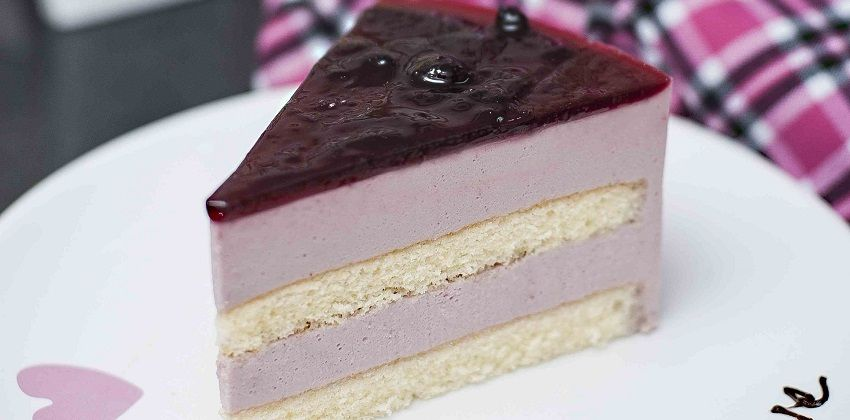

Bánh Mousse Việt quất
Giới thiệu
“Nhỏ mà có võ” chắc là câu phù hợp nhất để miêu tả bạn mousse việt quất này nói riêng, hay họ hàng nhà mousse nói chung. Mùi việt quất thơm kiểu rất đặc trưng, đi kèm với vị chua nhẹ nhàng, kết hợp cùng kem tươi ngậy béo, mát mát tan trên đầu lưỡi. Hmmm..
Mô tả
Liên hệ - Báo giá
Hướng dẫn cách làm
- Kích thước:
Đường kính 14 - 16 - 18 - 20 cm
- Thành phần : Việt quất tươi, sữa tươi, đường, Whipping cream,Kem cheese, gelatin, trứng gà, bột mì, bơ (dầu ăn), Vanilla.
- Hướng dẫn sử dụng: Bảo quản ở nhiệt độ 2-5*C
- Vui lòng liên hệ để được báo giá chính xác
- Hotline: Ms Quỳnh 03 555 36932 (Zalo)
- Một số loại bánh sử dụng trái cây tươi, vì vậy giá sẽ theo mùa
-
Nguyên liệu:
- Phần đế bánh (không dùng lò nướng) :
Bánh oreo (bánh quy): 13 cái
- Phần Mousse Chanh dây :
Nước cốt chanh leo: 100 gram (khoảng 4 quả)
Đường: 100g (tùy chỉnh vào khẩu vị)
- Phần lớp gương:
Nước cốt chanh leo: 80 gram (khoảng 3 quả chanh leo)
-
Thực hiện:
- Phần đế bánh:
Bánh oreo bỏ nhân, cho vào túi nilong, cột chặt túi nilon lại và đập vụn bánh ,
thật mịn.
Đun chảy 35gr bơ, hòa từng chút một, trộn đều cho đến khi bánh quy thấm hết bơ.
Cho bánh quy vào khuôn đến tròn và dàn đều. Sau đó, cất trong ngăn mát tủ lạnh
để bơ se lại, bánh sẽ kết dính và cứng cáp hơn.
- Phần Mousse Chanh Leo
Bước 1: Mang kem tươi cùng với que và bát dùng để đánh kem bỏ vào tủ đá khoảng
từ 10 đến 15 phút, sau đó lấy ra đánh cho kem bông mềm. Lưu ý là không được đánh
kem đến bông cứng mà chỉ bông mềm thôi để khi trộn với chanh dây kem không bị
tách nước.
Bước 2: Bổ đôi chanh dây, dùng thìa nạo lấy hạt cho vào rây, dùng thìa quết cho
ra hết nước. Tiếp theo đó
cho đường vào khuấy đến khi đường tan hết rồi vớt hoặc dùng tăm chọc cho hết
bọt.
Bước 3: Gelatin ngâm vào nước cho mềm, vớt ra, vắt sạch nước rồi lại thêm vào
một ít nước sôi để nguội, cho vào lò vi sóng quay khoảng 30s (hoặc chưng cách
thủy cho tan chảy hết). Lấy gelatin ra, khuấy cho nguội bớt rồi đổ vào phần nước cốt chanh ở trên
trộn thật đều.
Sau đó cho phần nước cốt chanh leo và gelatin ở trên vào tô đựng kem tươi đã
đánh bông, trộn thật nhẹ nhàng cho tới khi được hỗn hợp đồng nhất thì đổ vào
khuôn, cho vào tủ lạnh để khoảng 3 tiếng.
- Lớp Gương Trang Trí
Bước 1: Cho đường vào nước cốt chanh dây và khuấy đều đến khi đường tan
hết
Bước 2: Gelatin bạn cũng ngâm mềm rồi cho một ít nước vào quay vi sóng cho tan
hết rồi đổ vào hỗn hợp chanh leo và đường ở trên, khuấy đều cho nguội hoàn toàn
rồi đổ lên lớp bánh mousse chanh leo (đã để trong tủ khoảng 3 tiếng cho đông rồi
nhé).
Bước 3: Mang hỗn hợp đem cất vào tủ lạnh. Sau khoảng 30 phút, rắc hạt chanh leo
lên trên để trang trí rồi lại cho vào tủ lạnh, để cho đông hoàn toàn là có thể
ăn.